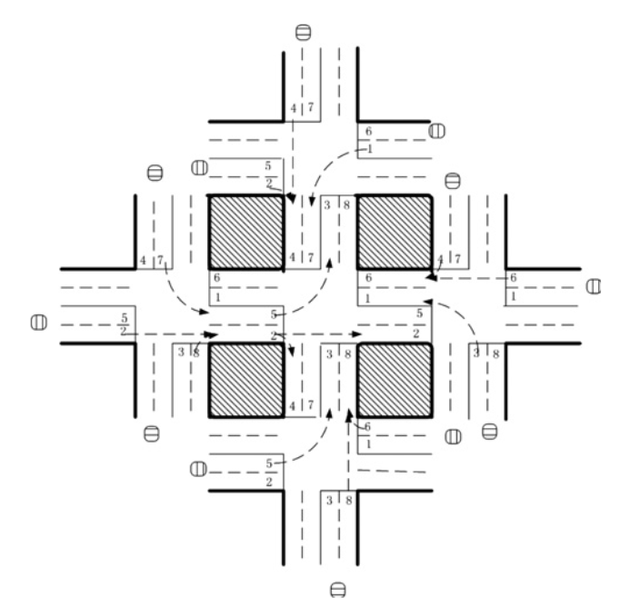

Dans l'article "Reinforcement learning-based multi-agent system for network traffic signal control" , les chercheurs ont tenté de concevoir un contrôleur de feux de circulation pour résoudre le problème de la congestion. Testées uniquement sur un environnement simulé, leurs méthodes ont toutefois donné des résultats supérieurs à ceux des méthodes traditionnelles et ont mis en lumière les utilisations potentielles du RL multi-agent dans la conception du système de circulation.

Cinq agents ont été placés dans le réseau de circulation à cinq intersections, avec un agent RL à l'intersection centrale pour contrôler la signalisation routière. L'état a été défini comme un vecteur à huit dimensions, chaque élément représentant le flux de trafic relatif de chaque voie. Huit choix étaient proposés à l'agent, chacun représentant une combinaison de phases, et la fonction de récompense a été définie comme la réduction du retard par rapport au pas de temps précédent. Les auteurs ont utilisé le DQN (Deep Q network) pour connaître la valeur Q des paires {état, action}.
Copyright © All rights reserved | This template is made with by Colorlib